토목산업기사 (2015-05-31 기출문제)
1과목: 응용역학
1. 길이 10m, 지름 30mm의 철근이 5mm 늘어나기 위해서는 얼마의 하중이 필요한가? (단, E=2×106kgf/cm2)
- 5,148kgf
- 6,215kgf
- 7,069kgf
- 8,132kgf
(정답률: 63%)

2. 다음 중 정정구조물의 처짐 해석법이 아닌 것은?
- 모멘트면적법
- 공액보법
- 가상일의 원리
- 처짐각법
(정답률: 57%)
3. 구조계산에서 자동차나 열차의 바퀴와 같은 차륜하중은 어떤 형태의 하중으로 계산하는가?
- 집중하중
- 등분포하중
- 모멘트하중
- 등변분포하중
(정답률: 66%)
4. 그림과 같은 트러스에서 부재 AB의 부재력은?
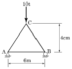
- 3.25tf(인장)
- 3.75tf(인장)
- 4.25tf(인장)
- 4.75tf(인장)
(정답률: 63%)
5. 지름이 D이고 길이가 50D인 원형 단면으로 된 기둥의 세장비를 구하면?
- 200
- 150
- 100
- 50
(정답률: 68%)
6. 트러스를 정적으로 1차응력을 해석하기 위한 가정사항으로 틀린 것은?
- 절점을 잇는 직선은 부재축과 일치한다.
- 외력은 절점과 부재 내부에 작용하는 것으로 한다.
- 외력의 작용선은 트러스와 동일 평면 내에 있다.
- 각 부재는 마찰이 없는 핀 또는 힌지로 결합되어 자유로이 회전할 수 있다.
(정답률: 51%)
7. 재질 및 단면이 같은 다음의 2개의 외팔보에서 자유단의 처짐을 같게 하는 P1/P2의 값이 바른 것은?
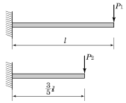
- 0.216
- 0.325
- 0.437
- 0.546
(정답률: 56%)
8. 정정구조물에 비해 부정정구조물이 갖는 장점을 설명한 것 중 틀린 것은?
- 설계모멘트의 감소로 부재가 절약된다.
- 외관이 우아하고 아름답다.
- 부정정구조물은 그 연속성 때문에 처짐의 크기가 작다.
- 지점침하 등으로 인해 발생하는 응력이 작다.
(정답률: 44%)
9. 그림과 같은 캔틸레버보에서 A점의 처짐은? (단, EI는 일정하다.)
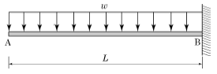
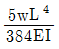
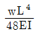
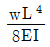
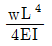
(정답률: 45%)
10. 지름이 4cm인 원형 강봉을 10tf 의 힘으로 잡아 당겼을 때 소성은 일어나지 않았고 탄성변형에 의해 길이가 1mm 증가하였다. 강봉에 축적된 탄성변형에너지는 얼마인가?
- 1.0tf⋅mm
- 5.0tf⋅mm
- 10.0tf⋅mm
- 20.0tf⋅mm
(정답률: 48%)
11. 그림과 같은 직사각형 단면의 단면계수는?
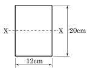
- 800cm3
- 1,000cm3
- 1,200cm3
- 1,400cm3
(정답률: 75%)
12. 그림과 같은 내민보에서 지점 A에 발생하는 수직반력은?
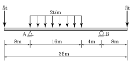
- 15tf
- 20tf
- 25tf
- 30tf
(정답률: 66%)
13. 재료의 역학적 성질 중 탄성계수를 E, 전단탄성계수를 G, 푸아송수를 m 이라 할 때 각 성질의 상호관계 식으로 옳은 것은?
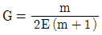
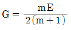
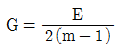
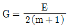
(정답률: 75%)
14. 그림과 같은 단순보에 연행하중이 작용할 경우 절대최대휨모멘트는 얼마인가?(오류 신고가 접수된 문제입니다. 반드시 정답과 해설을 확인하시기 바랍니다.)
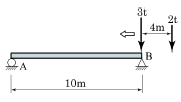
- 6.50tf⋅m
- 7.04tf⋅m
- 8.04tf⋅m
- 8.82tf⋅m
(정답률: 29%)
15. 그림과 같은 3활절 라멘에 일어나는 최대휨모멘트는?
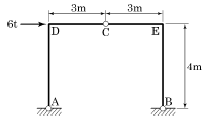
- 9tf⋅m
- 12tf⋅m
- 15tf⋅m
- 18tf⋅m
(정답률: 66%)
16. 반지름 r원형단면 보에 휨모멘트 M이 작용할 때 최대 휨응력은?
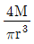
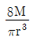
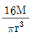
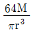
(정답률: 64%)
17. 직경 50mm, 길이 2m의 봉이 힘을 받아 길이가 2mm 늘어나고, 직경은 0.015mm가 줄어들었다면, 이 봉의 푸아송비 얼마인가?
- 0.24
- 0.26
- 0.28
- 0.30
(정답률: 74%)
18. 다음 도형에서 x축에 대한 단면2차모멘트는?(오류 신고가 접수된 문제입니다. 반드시 정답과 해설을 확인하시기 바랍니다.)
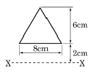
- 376cm4
- 432cm4
- 484cm4
- 538cm4
(정답률: 54%)
19. 그림과 같은 단순보에 발생하는 최대 전단응력(τmax)은?
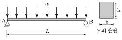
- 4wL/9bh
- wL/2bh
- 9wL/16bh
- 3wL/4bh
(정답률: 72%)
20. 지름이 D 인 원형 단면의 기둥에서 핵(Core)의 직경은?
- D/2
- D/3
- D/4
- D/6
(정답률: 82%)
2과목: 측량학
21. 측량에서 관측된 값에 포함되어 있는 오차를 조정하기 위해 최소제곱법을 이용하게 되는데 이를 통하여 처리되는 오차는?
- 과실
- 정오차
- 우연오차
- 기계적오차
(정답률: 71%)
22. 초점거리 150mm의 사진기로 해면으로부터 2,000m 상공에서 촬영한 어느 산정의 사진 축척이 1:10,000일 때 이 산정의 높이는?
- 300m
- 500m
- 800m
- 1,200m
(정답률: 54%)
23. 하천의 연직선내의 평균유속을 구할 때 3점법을 사용하는 경우, 평균유속(Vm)을 구하는 식은? (단, Vn : 수면으로부터 수심의 에 해당되는 지점의 관측유속)
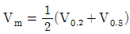
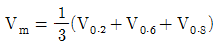
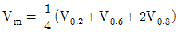
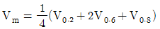
(정답률: 73%)
24. 토공작업을 수반하는 종단면도에 계획선을 넣을 때 고려하여야 할 사항으로 옳지 않은 것은?
- 계획선은 될 수 있는 한 요구에 맞게 한다.
- 절토는 성토로 이용할 수 있도록 운반거리를 고려하여야 한다.
- 경사와 곡선을 병설해야 하고 단조로움을 피하기 위하여 가능한 많이 설치한다.
- 절토량과 성토량은 거의 같게 한다.
(정답률: 72%)
25. 사진판독의 요소와 거리가 먼 것은?(오류 신고가 접수된 문제입니다. 반드시 정답과 해설을 확인하시기 바랍니다.)
- 색조, 모양
- 질감, 크기
- 과고감, 상호위치관계
- 촬영고도, 화면거리
(정답률: 52%)
26. 축척 1:1,000의 도면에서 면적을 측정한 결과 5cm2이었다. 이 도면이 전체적으로 1%신장되어 있었다면 실제면적은?
- 510m2
- 5⑤m2
- 495m2
- 490m2
(정답률: 50%)
27. 타원체에 관한 설명으로 옳은 것은?
- 어느 지역의 측량좌표계의 기준이 되는 지구타원체를 준거타원체(또는 기준타원체)라 한다.
- 실제 지구와 가장 가까운 회전타원체를 지구타원체라 하며, 실제 지구의 모양과 같이 굴곡이 있는 곡면이다.
- 타원의 주축을 중심으로 회전하여 생긴 지구물리학적 형상을 회전타원체라 한다.
- 준거타원체는 지오이드와 일치한다.
(정답률: 60%)
28. 삼각망 중 조건식이 가장 많아 가장 높은 정확도를 얻을 수 있는 것은?
- 단열삼각망
- 사변형삼각망
- 유심다각망
- 트래버스망
(정답률: 80%)
29. 축척 1:2,500의 도면에 등고선 간격을 2m로 할 때 육안으로 식별할 수 있는 등고선과 등고선 사이의 최소거리가 0.4mm라 하면 등고선으로 표시할 수 있는 최대 경사각은?
- 52.1°
- 63.4°
- 72.8°
- 81.6°
(정답률: 48%)
30. 체적계산에 있어서 양 단면의 면적이 A1=80m2, A2=40m2, 중간 단면적 Am=70m2이다. A1, A2 단면사이의 거리가 30m이면 체적은? (단, 각주공식 사용)
- 2,000m3
- 2,060m3
- 2,460m3
- 2,640m3
(정답률: 72%)
31. 노선측량에서 평면곡선으로 공통 접선의 반대방향에 반지름(R)의 중심을 갖는 곡선 형태는?
- 복심곡선
- 포물선곡선
- 반향곡선
- 횡단곡선
(정답률: 67%)
32. 우리나라의 축척 1:50,000 지형도에 있어서 등고선의 주곡선 간격은?
- 5m
- 10m
- 20m
- 100m
(정답률: 79%)
33. 교각 I=90°, 곡선반지름 R=200m인 단곡선에서 노선기점으로부터 교점까지의 거리가 520m일 때 노선기점으로부터 곡선시점까지의 거리는?
- 280m
- 320m
- 390m
- 420m
(정답률: 73%)
34. 그림과 같은 터널의 천정에 대한 수준측량 결과에서 C점의 지반고는? (단, b1=2.324m, f1=3.246m, b2=2.787m, f2=2.938m, A점 지반고=32.243m)(문제복원중으로 그림 파일이 없습니다. 정확한 그림 내용을 아시는분 께서는 관리자 메일 또는 게시판으로 그림 보내주시면 감사하겠습니다.)
- 31.170m
- 32.088m
- 33.316m
- 37.964m
(정답률: 39%)
35. 삼각측량을 위한 삼각점의 위치선정에 있어서 피해야 할 장소로서 중요도가 가장 적은 것은?
- 편심관측을 하여야 하는 곳
- 나무를 벌목하여야 하는 곳
- 습지와 같은 연약지반인 곳
- 측표의 높이를 높게 설치하여야 되는 곳
(정답률: 57%)
36. 그림과 같은 결합 트래버스의 관측 오차를 구하는 공식은? (단, [a]=a1+a2…… +an-1+an)
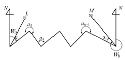
- (Wa-Wb)+[a]-180°(n+1)
- (Wa-Wb)+[a]-180°(n-1)
- (Wa-Wb)+[a]-180°(n-2)
- (Wa-Wb)+[a]-180°(n-3)
(정답률: 65%)
37. 캔트(cant)계산에서 속도 및 반지름을 모두 2배로 증가하면 캔트는?
- 1/2로 감소한다.
- 2배로 증가한다.
- 4배로 증가한다.
- 8배로 증가한다.
(정답률: 83%)
38. 방위각 260°의 역방위는 얼마인가?
- N80°E
- N80°W
- S80°E
- S80°W
(정답률: 68%)
39. 아래와 같은 수준측량 성과에서 측점4의 지반고는? (단위 : m)
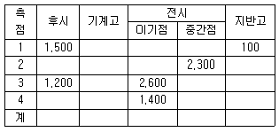
- 98.7m
- 98.9m
- 100.1m
- 100.3m
(정답률: 63%)
40. 트래버스 측량에서 발생된 폐합오차를 조정하는 방법 중의 하나인 컴퍼스법칙(Compass Rule)의 오차 배분방법에 대한 설명으로 옳은 것은?
- 트래버스 내각의 크기에 비례하여 배분한다.
- 트래버스 외각의 크기에 비례하여 배분한다.
- 각 변의 위ㆍ경거에 비례하여 배분한다.
- 각 변의 측선 길이에 비례하여 배분한다.
(정답률: 49%)
3과목: 수리학
41. 유체의 기본성질에 대한 설명으로 틀린 것은?
- 압축률과 체적탄성계수는 비례관계에 있다.
- 압력변화와 체적변화율의 비를 체적탄성계수라 한다.
- 액체와 기체의 경계면에 작용하는 분자 인력을 표면장력이라 한다.
- 액체 내부에서 유체분자가 상대적인 운동을 할 때, 이에 저항하는 전단력이 작용한다. 이 성질을 점성이라한다.
(정답률: 59%)
42. 그림에서 (a), (b) 바닥이 받는 총수압을 각각 Pa, Pb라 표시할 때 두 총수압의 관계로 옳은 것은? (단, 바닥 및 상면의 단면적은 그림과 같고, (a), (b)의 높이는 같다.)
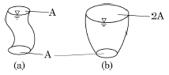
- Pa=2Pb
- Pa=Pb
- 2Pa=Pb
- 4Pa=Pb
(정답률: 61%)
43. 그림과 같은 사다리꼴 수로에 등류가 흐를 때 유량은? (단, 조도계수 n=0.013, 수로경사 i=/1000, 측벽의 경사=1:1이며, Manning 공식 이용)
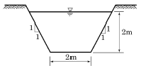
- 16.21m3/s
- 18.16m3/s
- 20.04m3/s
- 22.16m3/s
(정답률: 50%)
44. 그림과 같이 불투수층까지 미치는 암거에서의 용수량(湧水量) Q는? (단, 투수계수 k=0.009m/s)
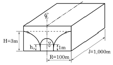
- 0.36m3/ s
- 0.72m3/ s
- 36m3/ s
- 72m3/ s
(정답률: 62%)
45. 그림은 두 개의 수조를 연결하는 등단면 단일 관수로이다. 관의 유속을 나타낸 식은? (단, f : 마찰손실계수, fo=1.0, fi=0.5, L/D＜3000)
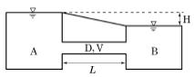
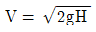
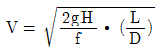
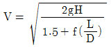
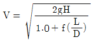
(정답률: 55%)
46. Darcy의 법칙을 층류에만 적용하여야 하는 이유는?
- 유속과 손실수두가 비례하기 때문이다.
- 지하수 흐름은 항상 층류이기 때문이다.
- 투수계수의 물리적 특성 때문이다.
- 레이놀즈수가 크기 때문이다.
(정답률: 66%)
47. 지름 100cm의 원형단면 관수로에 물이 만수되어 흐를 때의 동수반경(hydraulic radius)은?
- 50cm
- 75cm
- 25cm
- 20cm
(정답률: 63%)
48. 그림과 같은 오리피스에서 유출되는 유량은? (단, 이론 유량을 계산한다.)
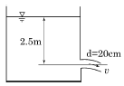
- 0.12m3/s
- 0.22m3/s
- 0.32m3/s
- 0.42m3/s
(정답률: 65%)
49. 그림과 같은 완전 수중 오리피스에서 유속을 구하려고 할 때 사용되는 수두는?
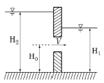
- H2-H1
- H1-H0
- H2-H0
- H1+H2/0
(정답률: 77%)
50. 개수로의 특성에 대한 설명으로 옳지 않은 것은?
- 배수곡선은 완경사 흐름의 하천에서 장애물에 의해 발생한다.
- 상류에서 사류로 바뀔 때 한계수심이 생기는 단면을 지배단면이라 한다.
- 사류에서 상류로 바뀌어도 흐름의 에너지선은 변하지 않는다.
- 한계수심으로 흐를 때의 경사를 한계경사라 한다.
(정답률: 77%)
51. 유체의 연속방정식에 대한 설명으로 옳은 것은?
- 뉴튼(Newton)의 제 2법칙을 만족시키는 방정식이다.
- 에너지와 일의 관계를 나타내는 방정식이다.
- 유선 상 두 점간의 단위체적당의 운동량에 관한 방정식이다.
- 질량 보존의 법칙을 만족 시키는 방정식이다.
(정답률: 63%)
52. 베르누이 정리를 압력의 항으로 표시할 때, 동압력(dynamic pressure) 항에 해당되는 것은?
- P
- ρgz
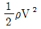
- V2/2g
(정답률: 69%)
53. 유량이 일정한 직사각형 수로의 흐름에서 한계류일 경우, 한계수심(yc)과 최소 비에너지(Emin)의 관계로 적절한 것은?
- yc=Emin
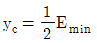
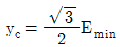
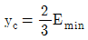
(정답률: 58%)
54. 직사각형 단면수로에서 폭 B=2m, 수심 H=6m이고 유량 Q=10m3/s일 때 Froude 수와 흐름의 종류는?
- 0.217, 사류
- 0.109, 사류
- 0.217, 상류
- 0.109, 상류
(정답률: 76%)
55. 에너지선과 동수경사선이 항상 평행하게 되는 흐름은?
- 등류
- 부등류
- 난류
- 상류
(정답률: 79%)
56. 부체의 안정성을 판단할 때 관계가 없는 것은?
- 경심(metacenter)
- 수심(water depth)
- 부심(center of buoyancy)
- 무게중심(center of gravity)
(정답률: 69%)
57. 레이놀즈수가 1500인 관수로 흐름에 대한 마찰손실계수 f의 값은?
- 0.030
- 0.043
- 0.⑤4
- 0.066
(정답률: 72%)
58. 폭 1.2m인 양단수축 직사각형 위어 정상부로부터의 평균수심이 42cm일 때 Francis의 공식으로 계산한 유량은? (단, 접근유속은 무시한다.)
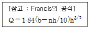
- 0.427m3/s
- 0.462m3/s
- 0.504m3/s
- 0.559m3/s
(정답률: 49%)
59. 그림과 같이 수평으로 놓은 원형관의 안지름이 A에서 50cm이고 B에서 25cm로 축소되었다가 다시 C에서 50cm로 되었다. 물이 340ℓ/s의 유량으로 흐를 때 A와 B의 압력차(PA-PB)는? (단, 에너지 손실은 무시한다.)
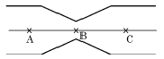
- 0.225N/cm2
- 2.25N/cm2
- 22.5N/cm2
- 225N/cm2
(정답률: 40%)
60. 어떤 액체의 밀도가 1×10-5N ㆍ s2/cm4이라면 이 액체의 단위 중량은?
- 9.8×10-3N/cm3
- 1.02×10-3N/cm3
- 1.02N/cm3
- 9.8N/cm3
(정답률: 59%)
4과목: 철근콘크리트 및 강구조
61. 다음 그림에서 인장력 P=400kN이 작용할 때 용접 이음부의 응력은 얼마인가?
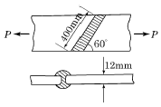
- 96.2MPa
- 101.2MPa
- 1⑤.3MPa
- 108.6MPa
(정답률: 69%)
62. 다음 중 유효깊이의 정의로 옳은 것은?
- 콘크리트의 인장 연단부터 모든 인장철근군의 도심까지 거리
- 콘크리트의 압축 연단부터 모든 인장철근군의 도심까지 거리
- 콘크리트의 인장 연단부터 최외단 인장철근의 도심까지의 거리
- 콘크리트의 압축 연단부터 최외단 인장철근의 도심까지 거리
(정답률: 63%)
63. 프리스트레스트 콘크리트에서 강재의 프리스트레스도입시 발생되는 즉시 손실에 해당되지 않는 것은?
- 정착장치의 활동에 의한 손실
- PS 강재와 긴장 덕트의 마찰에 의한 손실
- PS 강재의 릴랙세이션 손실
- 콘크리트의 탄성 수축에 의한 손실
(정답률: 68%)
64. bw=250mm, d=500mm, 압축연단에서 중립축까지의 거리(c)=200mm, fck=24MPa의 단철근 직사각형 균형보에서 콘크리트의 공칭 휨강도(Mn)는?
- 3⑤.8kN ㆍ m
- 359.8kN ㆍ m
- 364.3kN ㆍ m
- 423.3kN ㆍ m
(정답률: 62%)
65. 휨 부재에서 철근의 정착에 대한 위험단면에 해당되지 않는 것은?
- 지간내의 최대 응력점
- 인장철근이 끝난점
- 인장철근의 절곡점
- 지점에서 d만큼 떨어진 점
(정답률: 63%)
66. 나선철근과 띠철근 기둥에서 축방향 철근의 순간격에 대한 설명으로 옳은 것은?
- 25mm 이상, 또한 철근 공칭지름의 0.5배 이상으로 하여야 한다.
- 30mm 이상, 또한 철근 공칭지름의 1배 이상으로 하여야 한다.
- 40mm 이상, 또한 철근 공칭지름의 1.5배 이상으로 하여야 한다.
- 50mm 이상, 또한 철근 공칭지름의 2.5배 이상으로 하여야 한다.
(정답률: 74%)
67. 아래 표와 같은 하중을 받는 지간 5m의 단순보를 설계할 때 계수휨모멘트(Mu)는? (단, 하중계수와 하중 조합을 고려할 것)
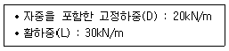
- 225kN ㆍ m
- 307kN ㆍ m
- 342kN ㆍ m
- 387kN ㆍ m
(정답률: 60%)
68. 이형철근이 인장을 받을 때 기본 정착 길이(ldb)를 구하는 식으로 옳은 것은? (단, 보통중량 콘크리트이고, db는 철근의 공칭지름)
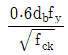
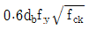
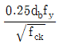
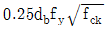
(정답률: 77%)
69. 그림과 같은 단순 PSC보에서 지간중앙의 절곡점에서 상향력(U)과 외력(P)이 비기기 위한 PS강선 프리스트레스힘(F)의 크기는 얼마인가? (단, 손실은 무시한다.)
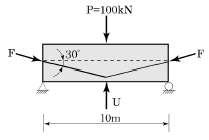
- 30kN
- 50kN
- 70kN
- 100kN
(정답률: 70%)
70. 용접변형(distortion)을 방지하기 위한 방법 중 틀린 것은?
- 용접길이를 가능하면 적게 설계한다.
- 용접변형이 작게 되는 이음을 선택한다.
- 용접금속중량을 충분히 크게 하고, 용접속도를 천천히 한다.
- 대칭용접이 되도록 용접시 용접순서를 선택한다.
(정답률: 65%)
71. 철근콘크리트 부재에 사용할 수 있는 전단철근에 대한 설명으로 틀린 것은?
- 주인장 철근에 30°이상의 각도로 설치되는 스터럽은 전단철근으로 사용할 수 있다.
- 주인장 철근에 30°이상의 각도로 구부린 굽힘철근은 전단철근으로 사용할 수 있다.
- 스터럽과 굽힘철근의 조합은 전단철근으로 사용할수 있다.
- 전단철근의 설계기준항복강도는 500MPa을 초과할 수 없다.
(정답률: 67%)
72. 강도설계법의 가정으로 틀린 것은?
- 철근과 콘크리트의 변형률은 중립축으로부터의 거리에 비례한다.
- 압축측 연단에서 콘크리트의 극한 변형률은 0.003으로 가정한다.
- 휨응력 계산에서 콘크리트의 인장강도는 무시한다.
- 극한강도 상태에서 콘크리트의 응력은 그 변형률에 비례한다.
(정답률: 57%)
73. PS강재가 가져야 할 일반적인 성질로 틀린 것은?
- 적당한 연성과 인성이 있어야 한다.
- 어느 정도의 피로강도를 가져야 한다.
- 직선성이 좋아야 한다.
- 항복비가 작아야 한다.
(정답률: 68%)
74. 철근콘크리트 구조물에서 피로에 대한 검토를 하지 않아도 되는 구조 부재는?
- 기둥
- 단순보
- 연속보
- 슬래브
(정답률: 71%)
75. 휨부재 단면에서 인장철근에 대한 최소철근량을 규정한 이유로 옳은 것은?
- 부재의 취성파괴를 유도하기 위하여
- 부재의 급작스런 파괴를 방지하기 위하여
- 사용 철근량을 줄이기 위하여
- 콘크리트 단면을 최소화하기 위하여
(정답률: 67%)
76. 아래 그림과 같은 보에 D13(1본 단면적 127mm2철근으로 수직스터럽을 250mm의 간격으로 설치하였다면, 전단철근에 의한 전단강도(Vs)는? (단, fck=28MPa, fy=400MPa)
- 164.8kN
- 186.3kN
- 208.6kN
- 223.5kN
(정답률: 60%)
77. 일반 콘크리트 부재의 해당 지속 하중에 대한 탄성처짐이 30mm이었다면 크리프 및 건조수축에 따른 추가적인 장기처짐을 고려한 최종 총 처짐량은? (단, 하중 재하기간은 5년이고, 압축철근비 ρ′는 0.002이다.)
- 80.8mm
- 84.6mm
- 89.4mm
- 95.2mm
(정답률: 68%)
78. 그림과 같은 직사각형 보에서 압축상단에서 중립축까지의 거리(c)는 얼마인가? (단, 철근 D22 4본의 단면적은 1548mm2, fck=35MPa, fy=350MPa이다.)
- 60.7mm
- 71.4mm
- 75.8mm
- 80.9mm
(정답률: 62%)
79. 폭 300mm, 유효깊이는 500mm의 단철근 직사각형보에서 콘크리트의 설계전단강도(øVc)는? (단, fck=28MPa이고, 전단과 휨만을 받는 부재이다.)
- 75.4kN
- 89.3kN
- 99.2kN
- 113.1kN
(정답률: 73%)
80. 단철근 직사각형 보에서 fck=28MPa, fy=400MPa일 때 균형철근비(ρb)는 약 얼마인가?
- 0.02572
- 0.03035
- 0.04317
- 0.⑤243
(정답률: 81%)
5과목: 토질 및 기초
81. 다음은 지하수 흐름의 기본 방정식인 Laplace 방정식을 유도하기 위한 기본가정이다. 틀린 것은?
- 물의 흐름은 Darcy의 법칙을 따른다.
- 흙과 물은 압축성이다.
- 흙은 포화되어 있고 모세관 현상은 무시한다.
- 흙은 등방성이고 균질하다.
(정답률: 71%)
82. 압밀 비배수 전단시험에 대한 설명으로 옳은 것은?
- 시험 중 간극수를 자유로 출입시킨다.
- 시험 중 전응력을 구할 수 없다.
- 시험 전 압밀할 때 비배수로 한다.
- 간극수압을 측정하면 압밀배수와 같은 전단강도 값을 얻을 수 있다.
(정답률: 54%)
83. 다음 중에서 정지토압 Po, 주동토압 PA, 수동토압 Pp의 크기 순서가 옳은 것은?
- Pp＜Po＜PA
- Po＜PA＜Pp
- Po＜Pp＜PA
- PA＜Po＜Pp
(정답률: 72%)
84. 다음 그림과 같은 모래지반에서 X-X단면의 전단강도는? (단, ø=30°, c=0)
- 1.56t/m2
- 2.14t/m2
- 3.12t/m2
- 4.27t/m2
(정답률: 68%)
85. 다음의 연약지반 처리공법에서 일시적인 공법은?
- 웰 포인트 공법
- 치환 공법
- 콤포져 공법
- 샌드 드레인 공법
(정답률: 64%)
86. 선행압밀하중은 다음 중 어느 곡선에서 구하는가?
- 압밀하중(log p) - 간극비(e) 곡선
- 압밀하중(p) - 간극비(e) 곡선
- 압밀시간(√t) - 압밀침하량(d) 곡선
- 압밀시간(log t) - 압밀침하량(d) 곡선
(정답률: 55%)
87. 다음 점토질 흙 위에 강성이 큰 사각형 독립 기초가 놓여졌을 때 기초 바닥 면에서의 응력의 상태를 설명한 것 중 옳은 것은?
- 기초 밑면에서의 응력은 일정하다.
- 기초의 중앙부분에서 최대 응력이 발생한다.
- 기초의 모서리 부분에서 최대 응력이 발생한다.
- 기초 밑면에서의 응력은 점토질과 모래질의 흙 모두 동일하다.
(정답률: 80%)
88. 흙이 동상작용을 받았다면 이 흙은 동상작용을 받기 전에 비해 함수비는?
- 증가한다.
- 감소한다.
- 동일하다.
- 증가할 때도 있고 감소할 때도 있다.
(정답률: 54%)
89. 체적이 19.65cm3인 포화토의 무게가 36g이다. 이 흙이 건조되었을 때 체적과 무게는 각각 13.50cm3과 25g이었다. 이 흙의 수축한계는 얼마인가?
- 7.4%
- 13.4%
- 19.4%
- 25.4%
(정답률: 43%)
90. 다음 중 표준관입 시험으로 구할 수 없는 것은?
- 사질토의 투수계수
- 점성토의 비배수점착력
- 점성토의 일축압축강도
- 사질토의 내부마찰각
(정답률: 65%)
91. 토층두께 20m의 견고한 점토지반 위에 설치된 건축물의 침하량을 관측한 결과 완성 후 어떤 기간이 경과 하여 그 침하량은 5.5cm에 달한 후 침하는 정지되었다. 이 점토 지반 내에서 건축물에 의해 증가되는 평균압력이 0.6kg/cm2이라면 이 점토층의 체적압축계수(mv)는?
- 4.58×10-3cm2/kg
- 3.25×10-3cm2/kg
- 2.15×10-2cm2/kg
- 1.15×10-2cm2/kg
(정답률: 42%)
92. 원주상의 공시체에 수직응력이 1.0kg/cm2, 수평응력이 0.5kg/cm2일 때 공시체의 각도 30°경사면에 작용하는 전단응력은?
- 0.17kg/cm2
- 0.22kg/cm2
- 0.35kg/cm2
- 0.43kg/cm2
(정답률: 46%)
93. 5m×10m의 장방형 기초 위에 q=6t/m2의 등분포하중이 작용할 때 지표면 아래 5m에서의 증가 유효수직응력을 2 : 1분포법으로 구한 값은?
- 1t/m2
- 2t/m2
- 3t/m2
- 4t/m2
(정답률: 61%)
94. 다음 중 사면의 안정해석방법이 아닌 것은?
- 마찰원법
- 비숍(Bishop)의 방법
- 펠레니우스(Fellenius) 방법
- 카사그란데(Casagrande)의 방법
(정답률: 74%)
95. 통일분류법에 의한 흙의 분류에서 조립토와 세립토를 구분할 때 기준이 되는 체의 호칭번호와 통과율로 옳은 것은?
- No.4(4.75mm)체, 35%
- No.10(2mm)체, 50%
- No.200(0.075mm)체, 35%
- No.200(0.075mm)체, 50%
(정답률: 67%)
96. Terzaghi의 극한지지력 공식에 대한 다음 설명 중 틀린 것은?
- 사질지반은 기초폭이 클수록 지지력은 증가한다.
- 기초 부분에 지하수위가 상승하면 지지력은 증가한다.
- 기초 바닥 위쪽의 흙은 등가의 상재하중으로 대치하여 식을 유도하였다.
- 점토지반에서 기초폭은 지지력에 큰 영향을 끼치지 않는다.
(정답률: 45%)
97. 어느 모래층의 간극률이 20%, 비중이 2.65이다. 이 모래의 한계 동수경사는?
- 1.32
- 1.38
- 1.42
- 1.48
(정답률: 73%)
98. 표준관입 시험에 대한 아래 표의 설명에서 ( )에 적합한 것은?
- 200
- 250
- 300
- 350
(정답률: 69%)
99. 그림과 같은 다짐곡선을 보고 다음 설명 중 틀린 것은?
- A는 일반적으로 사질토이다.
- B는 일반적으로 점성토이다.
- C는 과잉 간극 수압곡선이다.
- D는 최적 함수비를 나타낸다.
(정답률: 66%)
100. 흙의 다짐시험에서 다짐에너지를 증가시킬 때 일어나는 변화로 옳은 것은?
- 최적함수비와 최대건조밀도가 모두 증가한다.
- 최적함수비와 최대건조밀도가 모두 감소한다.
- 최적함수비가 증가하고 최대건조밀도는 감소한다.
- 최적함수비는 감소하고 최대건조밀도는 증가한다.
(정답률: 73%)
6과목: 상하수도공학
101. 지름이 0.2m, 길이 50m의 주철관으로 하수유량 2.4m3/min을 15m의 높이까지 양수하기 위한 펌프의 축동력은? (단, 전체 손실수두는 1.0m이고, 펌프의 효율은 85%)
- 9.9kW
- 7.4kW
- 6.3kW
- 5.4kW
(정답률: 58%)
102. 2,000ton/d의 하수를 처리할 수 있는 원형방사류식 침전지에서 체류시간은? (단, 평균수심 3m, 직경 8m)
- 1.6hr
- 1.7hr
- 1.8hr
- 1.9hr
(정답률: 59%)
103. 계획취수량의 결정에 대한 설명으로 옳은 것은?
- 계획1일 평균급수량에 10% 정도 증가된 수량으로 결정한다.
- 계획1일 최대급수량에 10% 정도 증가된 수량으로 결정한다.
- 계획1일 평균급수량에 30% 정도 증가된 수량으로 결정한다.
- 계획1일 최대급수량에 30% 정도 증가된 수량으로 결정한다.
(정답률: 75%)
104. 공동현상(Cavitation)의 방지책에 대한 설명으로 옳지 않은 것은?
- 펌프 회전수를 높여 준다.
- 손실수두를 작게 한다.
- 펌프의 설치 위치를 낮게 한다.
- 흡입관의 손실을 작게 한다.
(정답률: 64%)
1⑤. 상수도에서 펌프가압으로 배수할 경우에 펌프의 급정지, 급기동 등으로 수격작용이 일어날 경우 배수관의 손상을 방지하기 위하여 설치하는 밸브는?
- 안전밸브
- 배수밸브
- 가압밸브
- 자동지밸브
(정답률: 75%)
106. 하수관거의 각 관거별 계획하수량 산정 기준으로 옳지 않은 것은?
- 우수관거는 계획우수량으로 한다.
- 차집관거는 우천시 계획우수량으로 한다.
- 오수관거는 계획시간 최대오수량으로 한다.
- 합류식 관거는 계획시간 최대오수량에 계획우수량을 합한 것으로 한다.
(정답률: 56%)
107. 어느 도시의 인구가 500,000명이고, 1인당 폐수발생량이 300L/d, 1인당 배출 BOD가 60g/d인 경우, 발생폐수의 BOD 농도는?
- 150mg/L
- 200mg/L
- 250mg/L
- 300mg/L
(정답률: 46%)
108. 하수펌프장 시설이 필요한 경우로 가장 거리가 먼 것은?
- 방류하수의 수위가 방류수면의 수위보다 항상 낮은 경우
- 종말처리장의 방류구 수면을 방류하는 하해(河海)의 고수위보다 높게 할 경우
- 저지대에서 자연유하식을 취하면 공사비의 증대와 공사의 위험이 따르는 경우
- 관거의 매설깊이가 낮고 유량 조정이 필요 없는 경우
(정답률: 57%)
109. 다음 중 상수의 일반적인 정수과정 순서로서 옳은 것은?
- 침전 → 응집 → 소독 → 여과
- 침전 → 여과 → 응집 → 소독
- 응집 → 여과 → 침전 → 소독
- 응집 → 침전 → 여과 → 소독
(정답률: 67%)
110. 급속여과에 대한 설명 중 틀린 것은?
- 탁질의 제거가 완속여과보다 우수하여 탁한 원수의 여과에 적합하다.
- 여과속도는 120～150m/d를 표준으로 한다.
- 여과지 1지의 여과면적은 250m2이상으로 한다.
- 급속여과지의 형식에는 중력식과 압력식이 있다.
(정답률: 57%)
111. 함수율 99%인 침전 슬러지를 농축하여 함수율 94%로 만들었다. 원 슬러지(함수율 99%)의 유입량이 1,500m3/d일 때 농축 후 슬러지의 양은? (단, 농축 전 ㆍ 후 슬러지의 비중은 모두 1.0으로 가정)
- 200m3/d
- 250m3/d
- 750m3/d
- 960m3/d
(정답률: 52%)
112. 다음의 정수처리 공정별 설명으로 틀린 것은?
- 침전지는 응집된 플록을 침전시키는 시설이다.
- 여과지는 침전지에서 처리된 물을 여재를 통하여 여과하는 시설이다.
- 플록형성지는 플록형성을 위해 응집제를 주입하는 시설이다.
- 소독의 주목적은 미생물의 사멸이다.
(정답률: 62%)
113. 우수관과 오수관의 최소유속을 비교한 설명으로 옳은 것은?
- 우수관의 최소유속이 오수관의 최소유속보다 크다.
- 오수관의 최소유속이 우수관의 최소유속보다 크다.
- 세척방법에 따라 최소유속은 달라진다.
- 최소유속에는 차이가 없다.
(정답률: 62%)
114. 수원의 구비조건으로 옳지 않은 것은?
- 수질이 양호해야 한다.
- 최대갈수기에도 계획수량의 확보가 가능해야 한다.
- 오염 회피를 위하여 도심에서 멀리 떨어진 곳일수록 좋다.
- 수리권의 획득이 용이하고, 건설비 및 유지관리가 경제적이어야 한다.
(정답률: 73%)
115. 합류식 하수배제 방식과 분류식 하수배제 방식에 대한 설명으로 옳지 않은 것은?
- 합류식은 우천시 일정량 이상이 되면 월류현상이 발생한다.
- 분류식은 오수를 오수관으로 처분하므로 방류수역의 오염을 줄일 수 있다.
- 도시의 여건상 분류식채용이 어려우면 합류식으로 한다.
- 합류식은 강우발생시 오수가 우수에 의해 희석되므로 하수처리장 운영에 도움이 된다.
(정답률: 64%)
116. 총인구 20,000명인 어느 도시의 급수인구는 18,600명이며 일년간 총 급수량이 1,860,000톤이었다. 급수보급율과 1인 1일당 평균급수량(L)으로 옳은 것은?
- 93%, 274L
- 93%, 295L
- 107%, 274L
- 107%, 295L
(정답률: 68%)
117. 송수관에 대한 설명으로 옳은 것은?
- 배수지에서 수도계량기까지의 관
- 취수장과 정수장 사이의 관
- 배수지에서 주도로까지의 관
- 정수장과 배수지 사이의 관
(정답률: 68%)
118. 계획1일 최대오수량과 계획1일 평균오수량 사이에는 일정한 관계가 있다. 계획1일 평균오수량은 대체로 계획1일 최대오수량의 몇 %를 표준으로 하는가?
- 45～60%
- 60～75%
- 70～80%
- 80～90%
(정답률: 66%)
119. 집수매거(infiltration galleries)의 유출단에서 거내 평균 유속의 최대 기준은?
- 0.5m/s
- 1m/s
- 1.5m/s
- 2m/s
(정답률: 52%)
120. 하수처리방법의 선정 기준과 가장 거리가 먼 것은?
- 유입하수의 수량 및 수질부하
- 수질환경기준 설정 현황
- 처리장 입지조건
- 불명수 유입량
(정답률: 55%)
훅의 법칙은 "같은 온도와 조건에서 일정한 길이의 실린더 모양의 물체는 외력에 비례하여 변형된다"는 법칙입니다. 수식으로는 F = kx (F: 외력, x: 변형량, k: 변형 상수)로 나타낼 수 있습니다.
여기서 변형 상수 k는 재질의 탄성계수와 단면적에 의해 결정됩니다. 탄성계수는 재질의 물성 중 하나로, 단위 면적당 외력에 대한 변형량의 비율을 나타냅니다. 단면적은 실린더의 단면적을 의미합니다.
이 문제에서는 변형량 x가 주어졌으므로, 외력 F를 구하는 것이 목적입니다. 이를 위해 훅의 법칙을 다음과 같이 변형합니다.
F = kx
= (E × A / L) x
= (2 × 10^6 × π × (15/1000)^2 / 10) × 5/1000
≈ 7,069kgf
여기서 E는 탄성계수, A는 단면적, L은 길이를 나타냅니다. 따라서 정답은 7,069kgf입니다.